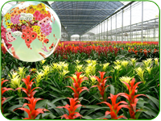
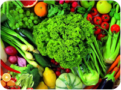
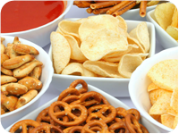

FLORICULTURE & SEEDS

Indian floriculture industry comprises of flowers such as Rose, Tuberose, Glads, Anthurium, Carnations, Marigold etc. Cultivation is undertaken in both open farm conditions as well as state-of-the-art poly and greenhouses.
FRESH FRUITS & VEGETABLES

Mangoes, Walnuts, Grapes, Bananas, Pomegranates account for larger portion of fruits exported from the country while Onions, Okra, Bitter Gourd, Green Chilles, Mushrooms and Potatoes contribute largely to the vegetable export basket.
PROCESSED FOODS

The Indian food processing industry is primarily export orient. India's geographical situation gives it the unique advantage of connectivity to Europe, the Middle East, Japan, Singapore, Thailand, Malaysia and Korea. One such example indicating India's location advantage is the value of trade in agriculture and processed food between India and Gulf region.